Daftar Isi
- Daftar Isi
- 1. Tampilan Website
- 2. Tampilan Android
E-hibahbansos adalah aplikasi yang berbasis web yang akan dipakai oleh setiap golongan masyarakat dan pihak terkait berhubungan dengan pengajuan dana hibah dan bantuan sosial dan proses-proses yang terdapat untuk mencairkan dana hibah atau bansos. Deskripsi Umum kebutuhan aplikasi yang akan diimplementasikan meliputi semua informasi yang bersifat teknis dan menjadi acuan dalam pengembangan apliksi.
Berikut ini adalah tampilan - tampilan yang terdapat didalam apliaksi e-Hibahbansos:
1. Tampilan Website
1.1 Tampilan Awal Aplikasi
1.1.1 Tampilan Home E-hibahbansos
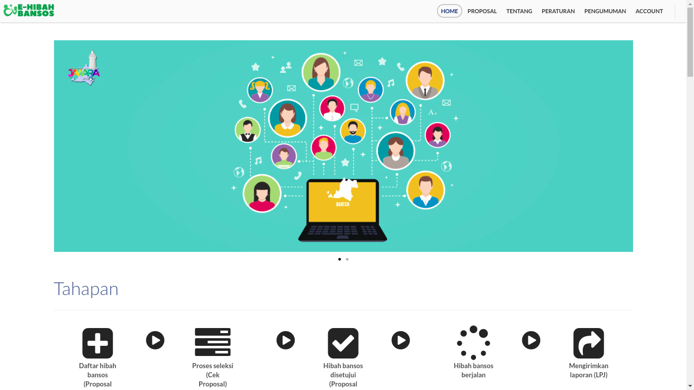 Pada saat membuka aplikasi maka user akan ditampilkan halaman Home aplikasi yang berisikan mengenai info-info mengenai aplikasi E-hibahbansos.
{kind=link}
1.1.2 Tampilan Proposal
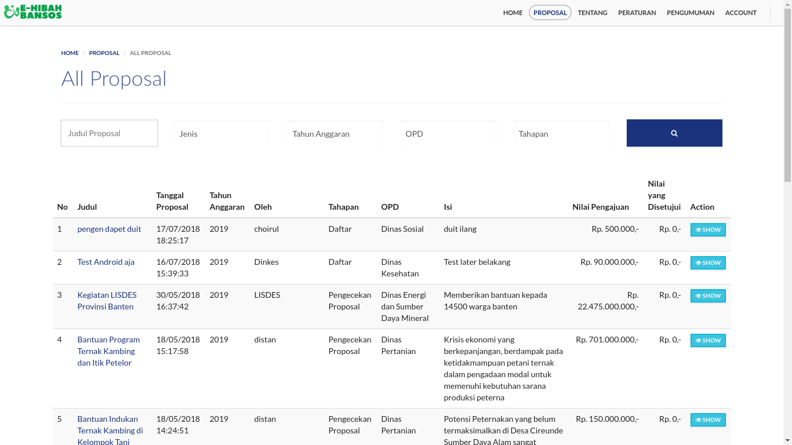 Pada modul PROPOSAL ini user dapat melihat proposal-proposal yang sudah terinput kedalam apliaksi E-hibahbansos dan sudah berada pada tahapan mana proposal tersebut. Pada modul ini terdapat tombol Show pada kolom action untuk melihat detail proposal.
{kind=link}
1.1.2.1 Tampilan Detail Proposal
 Pada Halaman ini user dapat melihat detail dari proposal yang ingin dilihat.
Pada Halaman ini user dapat melihat detail dari proposal yang ingin dilihat.
1.1.3 Tampilan Tentang
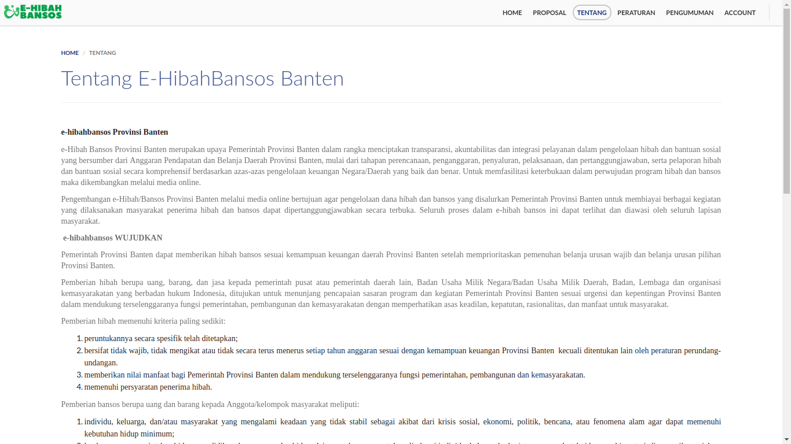 Pada modul TENTANG ini user dapat mengetahui informasi mengenai aplikasi E-hibahbansos seperti apa itu e-hibahbansos, tujuan dan tahapan-tahapan yang terdapat di dalam aplikasi E-hibahbansos.
{kind=link}
1.1.4 Tampilan Peraturan
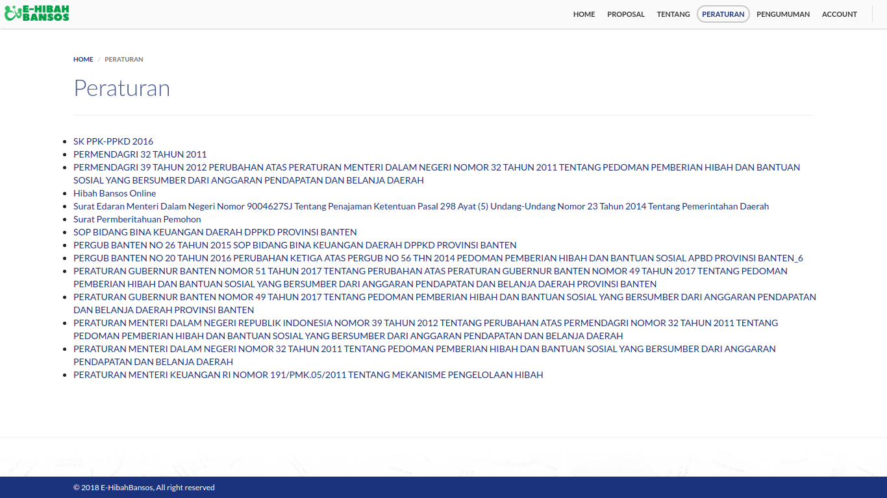 Pada modul PERATURAN ini user dapat melihat peraturan-peraturan yang menjadi dasar dalam pembuatan aplikasi E-hibahbansos.
{kind=link}
1.1.5 Tampilan Pengumuman
 Pada modul PENGUMUMAN ini user dapat melihat pengumuman yang dikeluarkan oleh operator E-hibahbansos.
Pada modul PENGUMUMAN ini user dapat melihat pengumuman yang dikeluarkan oleh operator E-hibahbansos.
1.1.6 Tampilan Account
Pada tampilan ini akan menampilkan beberapa sub modul yaitu Login Operator, Login dan Registrasi.
1.1.6.1 Login Operator
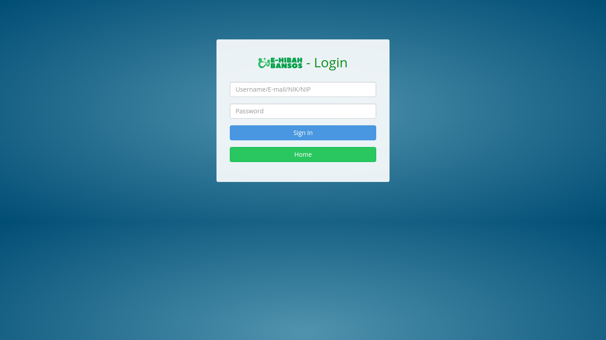 Login Operator hanya dapat diakses oleh admin dan OPD yang sudah terdaftar didalam aplikasi e-Hibahbansos.
{kind=link}
1.1.6.2 Login
Pada submodul Login ini user akan dialihkan ke link SSO untuk melakukan Login.
1.1.6.3 Registrasi
Pada submodul Registrasi ini user akan dialihkan ke link SSO untuk melakukan registrasi.
1.2 Tampilan Superadmin
1.2.1 Tampilan Dashboard
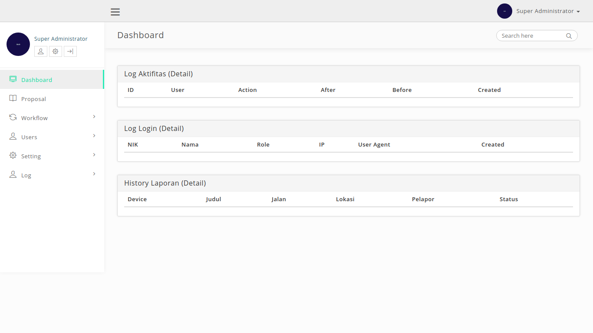 Tampilan Dashboard superadmin ini dapat diakses ketika superadmin berhasil melakukan login pada Login Operator. didalam tampilan ini terdapat beberapa modul seperti Dashboard, Proposal, Workflow, Users, Setting dan Log
{kind=link}
1.2.2 Tampilan Proposal
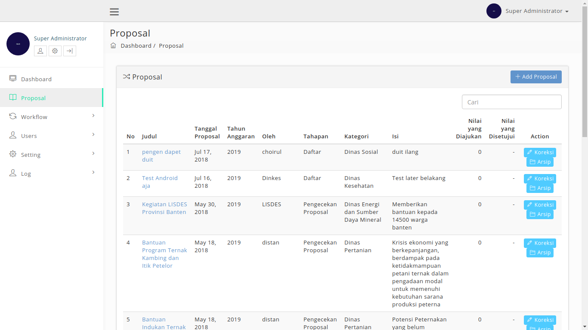 Tampilan Proposal ini dapat diakses dengan mengklik Proposal pada list menu superadmin, pada tampilan propoasl ini superadmin dapat mengakses koreksi dan arsip pada kolom action.
{kind=link}
1.2.2.1 Tampilan Proposal Koreksi
 Pada submodul koreksi ini admin dapat mengkoreksi proposal yang telah terdaftar pada aplikasi e-Hibahbansos.
Pada submodul koreksi ini admin dapat mengkoreksi proposal yang telah terdaftar pada aplikasi e-Hibahbansos.
1.2.2.2 Tampilan Proposal Arsip


 Pada submodul Arsip ini admin dapat mengupload foto dan dokumen yang berkaitan dengan proposal yang didaftarkan.
Pada submodul Arsip ini admin dapat mengupload foto dan dokumen yang berkaitan dengan proposal yang didaftarkan.
1.2.3 Tampilan Workflow
1.2.3.1 Tampilan Workflow
 Submodul ini dapat diakses dengan mengklik Workflow pada modul Workflow, pada submodul ini admin dapat melihat, menambahkan, mengedit dan menghapus data workflow yang terdapat pada aplikasi e-Hibahbansos.
Submodul ini dapat diakses dengan mengklik Workflow pada modul Workflow, pada submodul ini admin dapat melihat, menambahkan, mengedit dan menghapus data workflow yang terdapat pada aplikasi e-Hibahbansos.
-
Add New Workflow
 Halaman Add New Workflow ini dapat diakses dengan mengklik tombol Add New Workflow. Sehingga akan memunculkan Workflow Add Form, pada form ini admin dapat menambahkan workflow pada aplikasi e-Hibahbansos.
Halaman Add New Workflow ini dapat diakses dengan mengklik tombol Add New Workflow. Sehingga akan memunculkan Workflow Add Form, pada form ini admin dapat menambahkan workflow pada aplikasi e-Hibahbansos. -
Edit Workflow
 Halaman Edit Workflow ini dapat diakses dengan mengklik tombol Edit pada kolom action. Sehingga akan memunculkan Form Edit Workflow, pada form ini admin dapat merubah data workflow pada aplikasi e-Hibahbansos.
Halaman Edit Workflow ini dapat diakses dengan mengklik tombol Edit pada kolom action. Sehingga akan memunculkan Form Edit Workflow, pada form ini admin dapat merubah data workflow pada aplikasi e-Hibahbansos.
1.2.3.2 Tampilan State List
 Submodul ini dapat diakses dengan mengklik State List pada modul Workflow, pada submodul ini admin dapat melihat, menambahkan, mengedit dan menghapus data state list yang terdapat pada aplikasi e-Hibahbansos.
Submodul ini dapat diakses dengan mengklik State List pada modul Workflow, pada submodul ini admin dapat melihat, menambahkan, mengedit dan menghapus data state list yang terdapat pada aplikasi e-Hibahbansos.
-
Add New State
 Halaman Add New State ini dapat diakses dengan mengklik tombol Add New State. Sehingga akan memunculkan State Add Form, pada form ini admin dapat menambahkan State pada aplikasi e-Hibahbansos.
Halaman Add New State ini dapat diakses dengan mengklik tombol Add New State. Sehingga akan memunculkan State Add Form, pada form ini admin dapat menambahkan State pada aplikasi e-Hibahbansos. -
Edit State
 Halaman Edit State ini dapat diakses dengan mengklik tombol Edit pada kolom action. Sehingga akan memunculkan Form Edit State, pada form ini admin dapat merubah data State pada aplikasi e-Hibahbansos.
Halaman Edit State ini dapat diakses dengan mengklik tombol Edit pada kolom action. Sehingga akan memunculkan Form Edit State, pada form ini admin dapat merubah data State pada aplikasi e-Hibahbansos.
1.2.3.3 Tampilan Transition List
 Submodul ini dapat diakses dengan mengklik Transition List pada modul Workflow, pada submodul ini admin dapat melihat, menambahkan, mengedit dan menghapus data Transition yang terdapat pada aplikasi e-Hibahbansos.
Submodul ini dapat diakses dengan mengklik Transition List pada modul Workflow, pada submodul ini admin dapat melihat, menambahkan, mengedit dan menghapus data Transition yang terdapat pada aplikasi e-Hibahbansos.
-
Add New Transition
 Halaman Add New Transition ini dapat diakses dengan mengklik tombol Add New Transition. Sehingga akan memunculkan Transition Form, pada form ini admin dapat menambahkan Transition pada aplikasi e-Hibahbansos.
Halaman Add New Transition ini dapat diakses dengan mengklik tombol Add New Transition. Sehingga akan memunculkan Transition Form, pada form ini admin dapat menambahkan Transition pada aplikasi e-Hibahbansos. -
Edit Transition
 Halaman Edit Transition ini dapat diakses dengan mengklik tombol Edit pada kolom action. Sehingga akan memunculkan Form Edit Transition, pada form ini admin dapat merubah data Transition pada aplikasi e-Hibahbansos.
Halaman Edit Transition ini dapat diakses dengan mengklik tombol Edit pada kolom action. Sehingga akan memunculkan Form Edit Transition, pada form ini admin dapat merubah data Transition pada aplikasi e-Hibahbansos.
1.2.3.4 Tampilan Workflow Guard
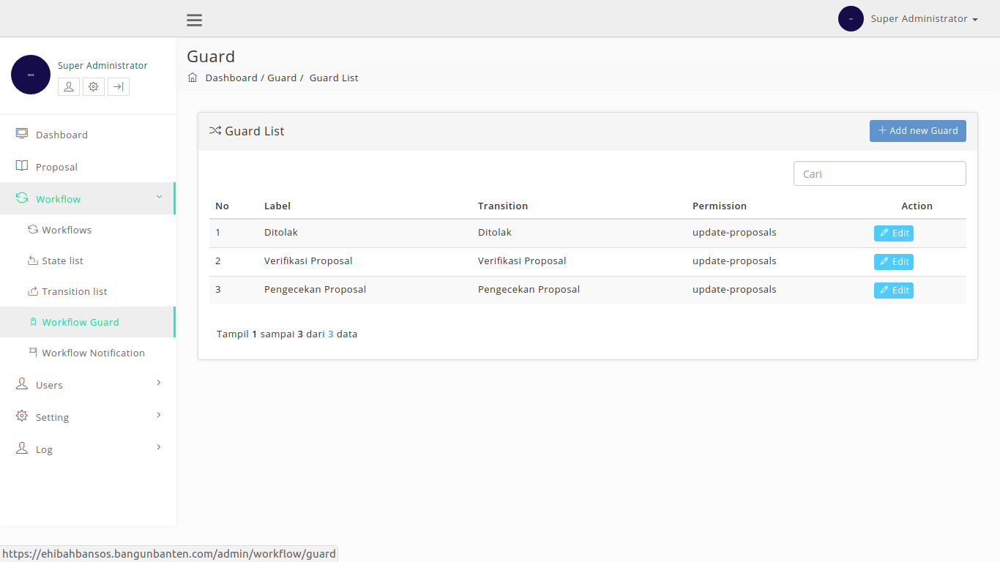 Submodul ini dapat diakses dengan mengklik Workflow Guard pada modul Workflow, pada submodul ini admin dapat melihat, menambahkan dan mengedit data Workflow Guard yang terdapat pada aplikasi e-Hibahbansos.
{kind=link}
-
Add New Guard
 Halaman Add New Guard ini dapat diakses dengan mengklik tombol Add New Guard. Sehingga akan memunculkan Guard Add Form, pada form ini admin dapat menambahkan Guard yang baru pada aplikasi e-Hibahbansos.
Halaman Add New Guard ini dapat diakses dengan mengklik tombol Add New Guard. Sehingga akan memunculkan Guard Add Form, pada form ini admin dapat menambahkan Guard yang baru pada aplikasi e-Hibahbansos. -
Edit Guard 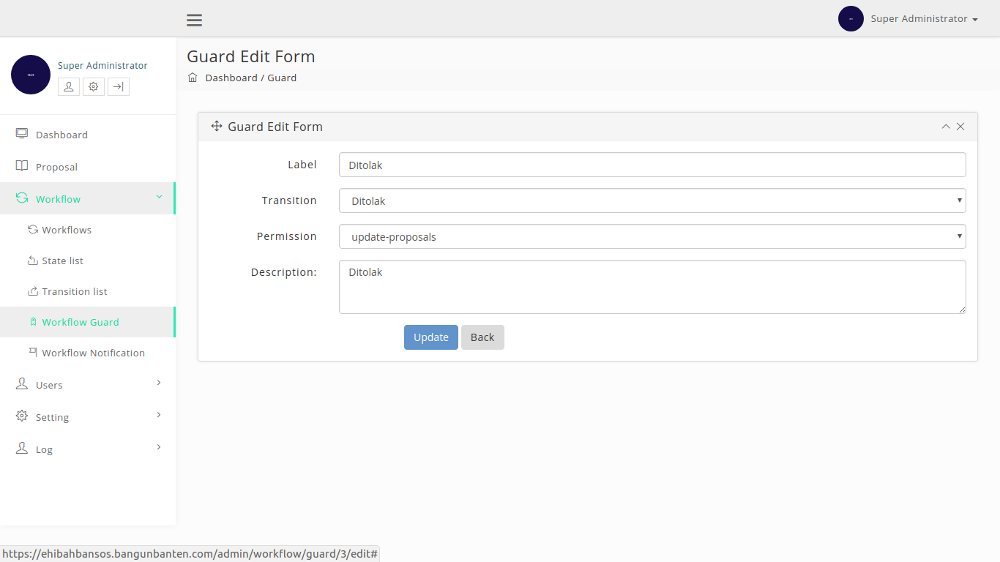 Halaman Edit Guard ini dapat diakses dengan mengklik tombol Edit pada kolom action. Sehingga akan memunculkan Form Edit Guard, pada form ini admin dapat merubah data Guard pada aplikasi e-Hibahbansos.
{kind=link}
1.2.3.5 Tampilan Workflow Notification
 Submodul ini dapat diakses dengan mengklik Workflow Notification pada modul Workflow, pada submodul ini admin dapat melihat, menambahkan, mengedit dan menghapus data Workflow Notification yang terdapat pada aplikasi e-Hibahbansos.
Submodul ini dapat diakses dengan mengklik Workflow Notification pada modul Workflow, pada submodul ini admin dapat melihat, menambahkan, mengedit dan menghapus data Workflow Notification yang terdapat pada aplikasi e-Hibahbansos.
-
Add New Notification
 Halaman Add New Notification ini dapat diakses dengan mengklik tombol Add Notification. Sehingga akan memunculkan Notification Add Form, pada form ini admin dapat menambahkan Notification yang baru pada aplikasi e-Hibahbansos.
Halaman Add New Notification ini dapat diakses dengan mengklik tombol Add Notification. Sehingga akan memunculkan Notification Add Form, pada form ini admin dapat menambahkan Notification yang baru pada aplikasi e-Hibahbansos. -
Edit Notification
 Halaman Edit Notification ini dapat diakses dengan mengklik tombol Edit pada kolom action. Sehingga akan memunculkan Form Edit Notification, pada form ini admin dapat merubah data Notification pada aplikasi e-Hibahbansos.
Halaman Edit Notification ini dapat diakses dengan mengklik tombol Edit pada kolom action. Sehingga akan memunculkan Form Edit Notification, pada form ini admin dapat merubah data Notification pada aplikasi e-Hibahbansos.
1.2.4 Tampilan User
1.2.4.1 Tampilan User List
 Submodul ini dapat diakses dengan mengklik User List pada modul User, pada submodul ini admin dapat melihat, menambahkan, mengedit dan menghapus data user yang terdapat pada aplikasi e-Hibahbansos.
Submodul ini dapat diakses dengan mengklik User List pada modul User, pada submodul ini admin dapat melihat, menambahkan, mengedit dan menghapus data user yang terdapat pada aplikasi e-Hibahbansos.
-
Add New User
 Halaman Add New User ini dapat diakses dengan mengklik tombol + User. Sehingga akan memunculkan Form User, pada form ini admin dapat menambahkan User yang baru pada aplikasi e-Hibahbansos.
Halaman Add New User ini dapat diakses dengan mengklik tombol + User. Sehingga akan memunculkan Form User, pada form ini admin dapat menambahkan User yang baru pada aplikasi e-Hibahbansos. -
Edit User
 Halaman Edit User ini dapat diakses dengan mengklik tombol Edit pada kolom action. Sehingga akan memunculkan Form Edit User, pada form ini admin dapat merubah data User pada aplikasi e-Hibahbansos.
Halaman Edit User ini dapat diakses dengan mengklik tombol Edit pada kolom action. Sehingga akan memunculkan Form Edit User, pada form ini admin dapat merubah data User pada aplikasi e-Hibahbansos.
1.2.4.2 Tampilan Permission
 Submodul ini dapat diakses dengan mengklik Permission pada modul User, pada submodul ini admin dapat melihat, menambahkan, mengedit dan menghapus data permission yang terdapat pada aplikasi e-Hibahbansos.
Submodul ini dapat diakses dengan mengklik Permission pada modul User, pada submodul ini admin dapat melihat, menambahkan, mengedit dan menghapus data permission yang terdapat pada aplikasi e-Hibahbansos.
-
Add New Permission 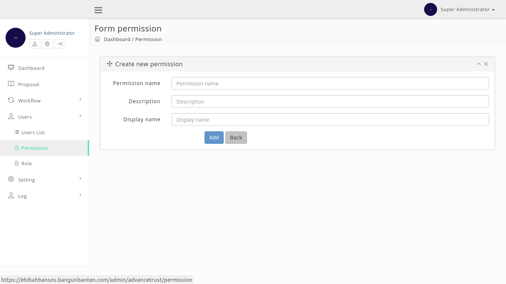 Halaman Add New Permission ini dapat diakses dengan mengklik tombol + Permission. Sehingga akan memunculkan Form Permission, pada form ini admin dapat menambahkan Permission yang baru pada aplikasi e-Hibahbansos.
-
Edit Permission
 Halaman Edit Permission ini dapat diakses dengan mengklik tombol Edit pada kolom action. Sehingga akan memunculkan Form Edit Permission, pada form ini admin dapat merubah data Permission pada aplikasi e-Hibahbansos.
Halaman Edit Permission ini dapat diakses dengan mengklik tombol Edit pada kolom action. Sehingga akan memunculkan Form Edit Permission, pada form ini admin dapat merubah data Permission pada aplikasi e-Hibahbansos.
{kind=link}
1.2.4.3 Tampilan Role
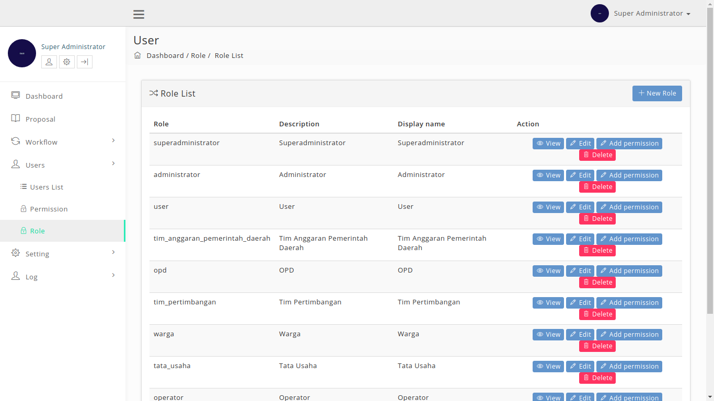 Submodul ini dapat diakses dengan mengklik Role pada modul User, pada submodul ini admin dapat melihat, menambahkan, mengedit, menghapus data role dan mengatur permission pada role yang terdapat pada aplikasi e-Hibahbansos.
{kind=link}
-
Add New Role
 Halaman Add New Role ini dapat diakses dengan mengklik tombol + New Role. Sehingga akan memunculkan Form Role, pada form ini admin dapat menambahkan Role yang baru pada aplikasi e-Hibahbansos.
Halaman Add New Role ini dapat diakses dengan mengklik tombol + New Role. Sehingga akan memunculkan Form Role, pada form ini admin dapat menambahkan Role yang baru pada aplikasi e-Hibahbansos. -
Edit Role
 Halaman Edit Role ini dapat diakses dengan mengklik tombol Edit pada kolom action. Sehingga akan memunculkan Form Edit Role, pada form ini admin dapat merubah data Role pada aplikasi e-Hibahbansos.
Halaman Edit Role ini dapat diakses dengan mengklik tombol Edit pada kolom action. Sehingga akan memunculkan Form Edit Role, pada form ini admin dapat merubah data Role pada aplikasi e-Hibahbansos. -
Add Permission
 Halaman Add Permission ini dapat diakses dengan mengklik tombol Add Permission pada kolom action. Sehingga akan memunculkan Form Update Role Permission, pada form ini admin dapat permision pada role yang terdapat pada aplikasi e-Hibahbansos.
Halaman Add Permission ini dapat diakses dengan mengklik tombol Add Permission pada kolom action. Sehingga akan memunculkan Form Update Role Permission, pada form ini admin dapat permision pada role yang terdapat pada aplikasi e-Hibahbansos.
1.2.5 Tampilan Setting
1.2.5.1 Tampilan Tentang
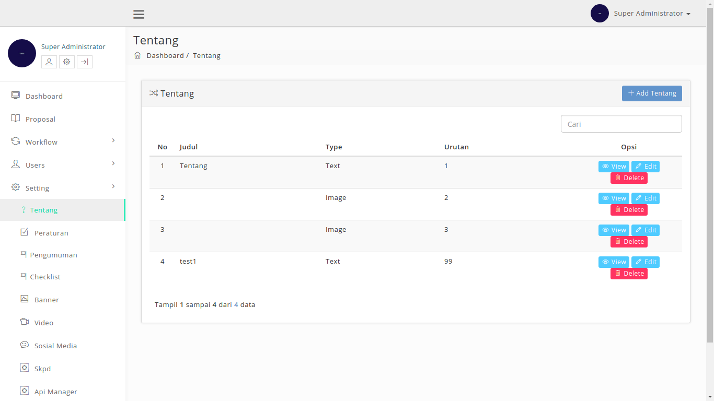 Submodul ini dapat diakses dengan mengklik Tentang pada modul Setting, pada submodul ini admin dapat melihat, menambahkan, mengedit dan menghapus data tampilan tentang yang terdapat pada aplikasi e-Hibahbansos.
{kind=link}
-
Add New Tentang
 Halaman Add New Tentang ini dapat diakses dengan mengklik tombol + Add Tentang. Sehingga akan memunculkan Form Tentang, pada form ini admin dapat menambahkan data Tentang yang baru pada aplikasi e-Hibahbansos.
Halaman Add New Tentang ini dapat diakses dengan mengklik tombol + Add Tentang. Sehingga akan memunculkan Form Tentang, pada form ini admin dapat menambahkan data Tentang yang baru pada aplikasi e-Hibahbansos. -
Edit Tentang
 Halaman Edit Tentang ini dapat diakses dengan mengklik tombol Edit pada kolom action. Sehingga akan memunculkan Form Edit Tentang, pada form ini admin dapat merubah data Tentang pada aplikasi e-Hibahbansos.
Halaman Edit Tentang ini dapat diakses dengan mengklik tombol Edit pada kolom action. Sehingga akan memunculkan Form Edit Tentang, pada form ini admin dapat merubah data Tentang pada aplikasi e-Hibahbansos.
1.2.5.2 Tampilan Peraturan
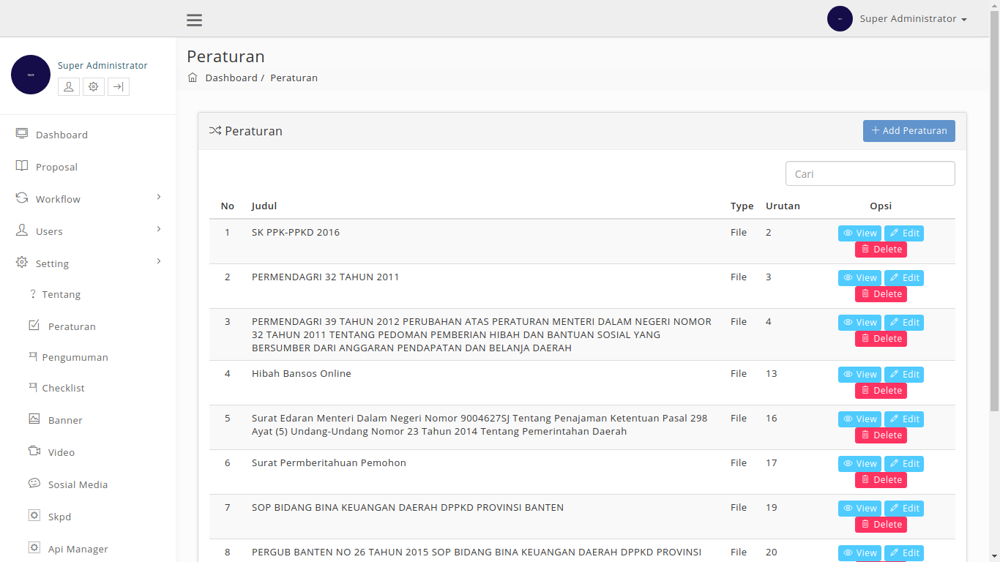 Submodul ini dapat diakses dengan mengklik Peraturan pada modul Setting, pada submodul ini admin dapat melihat, menambahkan, mengedit dan menghapus data tampilan Peraturan yang terdapat pada aplikasi e-Hibahbansos.
{kind=link}
-
Add New Peraturan
 Halaman Add New Peraturan ini dapat diakses dengan mengklik tombol + Add Peraturan. Sehingga akan memunculkan Form Perauran, pada form ini admin dapat menambahkan data Peraturan yang baru pada aplikasi e-Hibahbansos.
Halaman Add New Peraturan ini dapat diakses dengan mengklik tombol + Add Peraturan. Sehingga akan memunculkan Form Perauran, pada form ini admin dapat menambahkan data Peraturan yang baru pada aplikasi e-Hibahbansos. -
Edit Peraturan
 Halaman Edit Peraturan ini dapat diakses dengan mengklik tombol Edit pada kolom action. Sehingga akan memunculkan Form Edit Peraturan, pada form ini admin dapat merubah data Peraturan pada aplikasi e-Hibahbansos.
Halaman Edit Peraturan ini dapat diakses dengan mengklik tombol Edit pada kolom action. Sehingga akan memunculkan Form Edit Peraturan, pada form ini admin dapat merubah data Peraturan pada aplikasi e-Hibahbansos.
1.2.5.3 Tampilan Pengumuman
 Submodul ini dapat diakses dengan mengklik Pengumuman pada modul Setting, pada submodul ini admin dapat melihat, menambahkan dan mengedit data Pengumumanyang terdapat pada aplikasi e-Hibahbansos.
Submodul ini dapat diakses dengan mengklik Pengumuman pada modul Setting, pada submodul ini admin dapat melihat, menambahkan dan mengedit data Pengumumanyang terdapat pada aplikasi e-Hibahbansos.
-
Add New Pengumuman 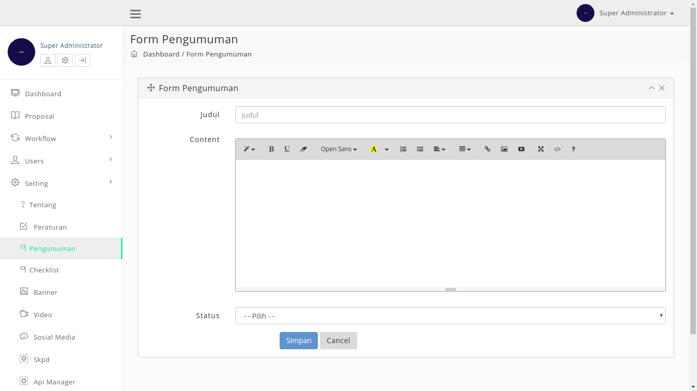 Halaman Add New Pengumuman ini dapat diakses dengan mengklik tombol + Add Pengumuman. Sehingga akan memunculkan Form Pengumuman, pada form ini admin dapat menambahkan data Pengumuman yang baru pada aplikasi e-Hibahbansos.
-
Edit Pengumuman
 Halaman Edit Pengumuman ini dapat diakses dengan mengklik tombol Edit pada kolom action. Sehingga akan memunculkan Form Edit Pengumuman, pada form ini admin dapat merubah data Pengumuman pada aplikasi e-Hibahbansos.
Halaman Edit Pengumuman ini dapat diakses dengan mengklik tombol Edit pada kolom action. Sehingga akan memunculkan Form Edit Pengumuman, pada form ini admin dapat merubah data Pengumuman pada aplikasi e-Hibahbansos.
{kind=link}
1.2.5.4 Tampilan Checklist
 Submodul ini dapat diakses dengan mengklik Checklist pada modul Setting, pada submodul ini admin dapat melihat, menambahkan, mengedit dan menghapus data Checklist yang terdapat pada aplikasi e-Hibahbansos.
Submodul ini dapat diakses dengan mengklik Checklist pada modul Setting, pada submodul ini admin dapat melihat, menambahkan, mengedit dan menghapus data Checklist yang terdapat pada aplikasi e-Hibahbansos.
-
Add New Checklist
 Halaman Add New Checklist ini dapat diakses dengan mengklik tombol + Add Checklist. Sehingga akan memunculkan Form Checklist, pada form ini admin dapat menambahkan data Checklist yang baru pada aplikasi e-Hibahbansos.
Halaman Add New Checklist ini dapat diakses dengan mengklik tombol + Add Checklist. Sehingga akan memunculkan Form Checklist, pada form ini admin dapat menambahkan data Checklist yang baru pada aplikasi e-Hibahbansos. -
Edit Checklist
 Halaman Edit Checklist ini dapat diakses dengan mengklik tombol Edit pada kolom action. Sehingga akan memunculkan Form Edit Checklist, pada form ini admin dapat merubah data Checklist pada aplikasi e-Hibahbansos.
Halaman Edit Checklist ini dapat diakses dengan mengklik tombol Edit pada kolom action. Sehingga akan memunculkan Form Edit Checklist, pada form ini admin dapat merubah data Checklist pada aplikasi e-Hibahbansos.
1.2.5.5 Tampilan Banner
 Submodul ini dapat diakses dengan mengklik Banner pada modul Setting, pada submodul ini admin dapat melihat, menambahkan, mengedit dan menghapus data Banner yang terdapat pada aplikasi e-Hibahbansos.
Submodul ini dapat diakses dengan mengklik Banner pada modul Setting, pada submodul ini admin dapat melihat, menambahkan, mengedit dan menghapus data Banner yang terdapat pada aplikasi e-Hibahbansos.
-
Add New Banner
 Halaman Add New Banner ini dapat diakses dengan mengklik tombol + Add Banner. Sehingga akan memunculkan Form Banner, pada form ini admin dapat menambahkan data Banner yang baru pada aplikasi e-Hibahbansos.
Halaman Add New Banner ini dapat diakses dengan mengklik tombol + Add Banner. Sehingga akan memunculkan Form Banner, pada form ini admin dapat menambahkan data Banner yang baru pada aplikasi e-Hibahbansos. -
Edit Banner 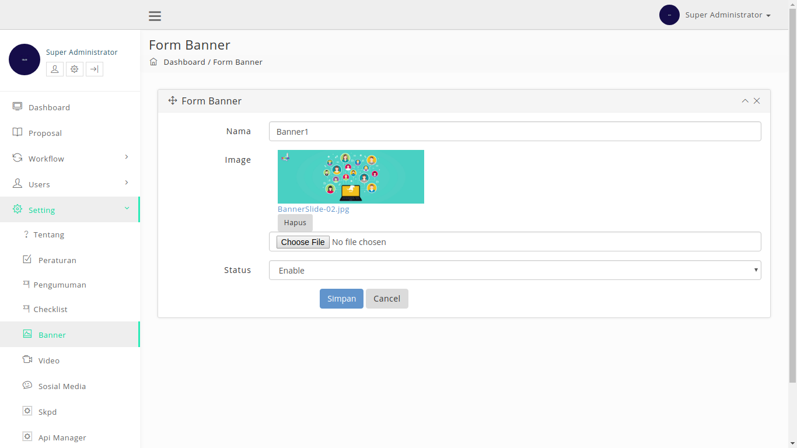 Halaman Edit Banner ini dapat diakses dengan mengklik tombol Edit pada kolom action. Sehingga akan memunculkan Form Edit Banner, pada form ini admin dapat merubah data Banner pada aplikasi e-Hibahbansos.
{kind=link}
1.2.5.6 Tampilan Video
 Submodul ini dapat diakses dengan mengklik Video pada modul Setting, pada submodul ini admin dapat melihat, menambahkan, mengedit dan menghapus data Video yang terdapat pada aplikasi e-Hibahbansos.
Submodul ini dapat diakses dengan mengklik Video pada modul Setting, pada submodul ini admin dapat melihat, menambahkan, mengedit dan menghapus data Video yang terdapat pada aplikasi e-Hibahbansos.
-
Add New Video
 Halaman Add New Video ini dapat diakses dengan mengklik tombol + Add Video. Sehingga akan memunculkan Form Video, pada form ini admin dapat menambahkan data Video yang baru pada aplikasi e-Hibahbansos.
Halaman Add New Video ini dapat diakses dengan mengklik tombol + Add Video. Sehingga akan memunculkan Form Video, pada form ini admin dapat menambahkan data Video yang baru pada aplikasi e-Hibahbansos. -
Edit Video
 Halaman Edit Video ini dapat diakses dengan mengklik tombol Edit pada kolom action. Sehingga akan memunculkan Form Edit Video, pada form ini admin dapat merubah data Video pada aplikasi e-Hibahbansos.
Halaman Edit Video ini dapat diakses dengan mengklik tombol Edit pada kolom action. Sehingga akan memunculkan Form Edit Video, pada form ini admin dapat merubah data Video pada aplikasi e-Hibahbansos.
1.2.5.7 Tampilan Sosial Media
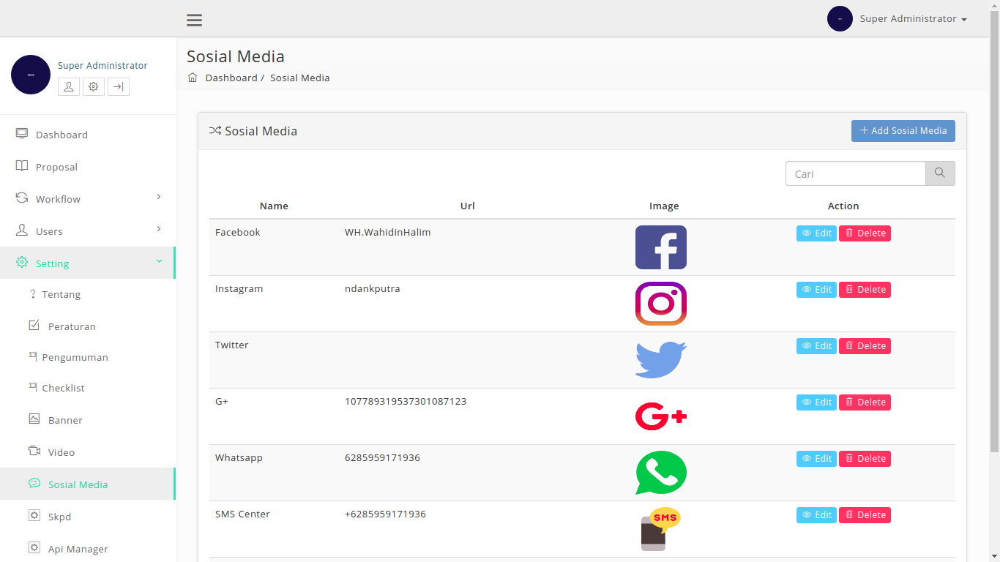 Submodul ini dapat diakses dengan mengklik Sosial Media pada modul Setting, pada submodul ini admin dapat melihat, menambahkan, mengedit dan menghapus data Sosial Media yang terdapat pada aplikasi e-Hibahbansos.
{kind=link}
-
Add New Sosial Media 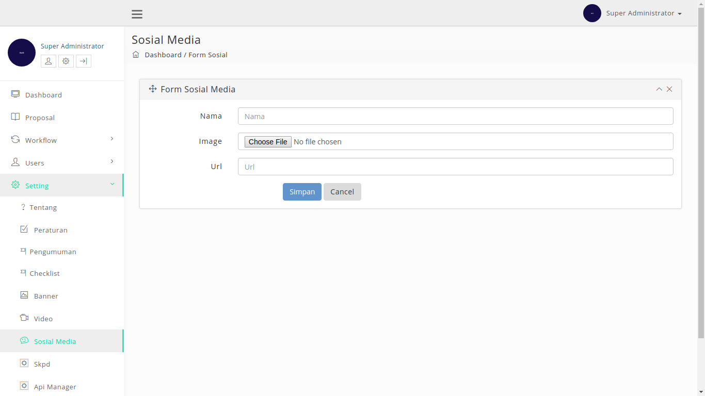 Halaman Add New Sosial Media ini dapat diakses dengan mengklik tombol + Add Sosial Media. Sehingga akan memunculkan Form Sosial Media, pada form ini admin dapat menambahkan data Sosial Media yang baru pada aplikasi e-Hibahbansos.
-
Edit Sosial Media
 Halaman Edit Sosial Media ini dapat diakses dengan mengklik tombol Edit pada kolom action. Sehingga akan memunculkan Form Edit Sosial Media, pada form ini admin dapat merubah data Sosial Media pada aplikasi e-Hibahbansos.
Halaman Edit Sosial Media ini dapat diakses dengan mengklik tombol Edit pada kolom action. Sehingga akan memunculkan Form Edit Sosial Media, pada form ini admin dapat merubah data Sosial Media pada aplikasi e-Hibahbansos.
{kind=link}
1.2.5.8 Tampilan SKPD
 Submodul ini dapat diakses dengan mengklik SKPD pada modul Setting, pada submodul ini admin dapat melihat, mengedit dan menghapus data SKPD yang terdapat pada aplikasi e-Hibahbansos.
Submodul ini dapat diakses dengan mengklik SKPD pada modul Setting, pada submodul ini admin dapat melihat, mengedit dan menghapus data SKPD yang terdapat pada aplikasi e-Hibahbansos.
- Edit SKPD
Halaman Edit SKPD ini dapat diakses dengan mengklik tombol Edit pada kolom action. Sehingga akan memunculkan Form Edit SKPD, pada form ini admin dapat merubah data SKPD pada aplikasi e-Hibahbansos.
1.2.5.9 Tampilan Api Manager
 Submodul ini dapat diakses dengan mengklik Api Manager pada modul Setting, pada submodul ini admin dapat melihat, menambahkan dan mengupdate data Api Manager yang terdapat pada aplikasi e-Hibahbansos.
Submodul ini dapat diakses dengan mengklik Api Manager pada modul Setting, pada submodul ini admin dapat melihat, menambahkan dan mengupdate data Api Manager yang terdapat pada aplikasi e-Hibahbansos.
-
Add New Api Manager
 Halaman Add New Api Manager ini dapat diakses dengan mengklik tombol + Add. Sehingga akan memunculkan Form Api Manager, pada form ini admin dapat menambahkan data Api Manager yang baru pada aplikasi e-Hibahbansos.
Halaman Add New Api Manager ini dapat diakses dengan mengklik tombol + Add. Sehingga akan memunculkan Form Api Manager, pada form ini admin dapat menambahkan data Api Manager yang baru pada aplikasi e-Hibahbansos. -
Update Api Manager 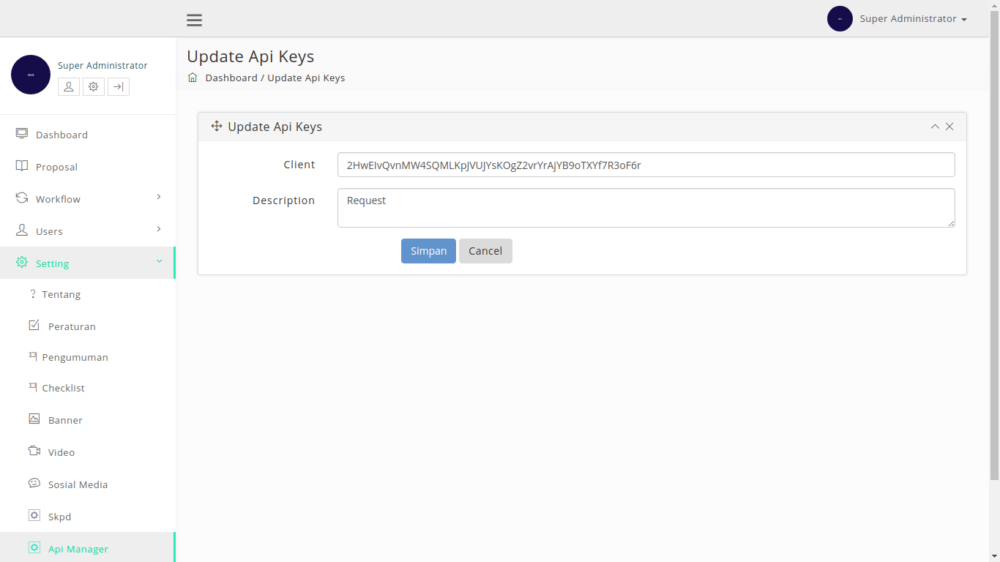 Halaman Update Api Manager ini dapat diakses dengan mengklik tombol Action pada kolom action. Sehingga akan memunculkan Form Update Api Keys, pada form ini admin dapat merubah data Api Manager pada aplikasi e-Hibahbansos.
{kind=link}
1.2.5.10 Tampilan Host Keys
 Submodul ini dapat diakses dengan mengklik Host Keys pada modul Setting, pada submodul ini admin dapat melihat dan menambahkan data Host Keys yang terdapat pada aplikasi e-Hibahbansos.
Submodul ini dapat diakses dengan mengklik Host Keys pada modul Setting, pada submodul ini admin dapat melihat dan menambahkan data Host Keys yang terdapat pada aplikasi e-Hibahbansos.
- Add Host Keys
 Halaman Add New Host Keys ini dapat diakses dengan mengklik tombol + Add. Sehingga akan memunculkan Form Request API Keys, pada form ini admin dapat menambahkan data Host Keys yang baru pada aplikasi e-Hibahbansos.
Halaman Add New Host Keys ini dapat diakses dengan mengklik tombol + Add. Sehingga akan memunculkan Form Request API Keys, pada form ini admin dapat menambahkan data Host Keys yang baru pada aplikasi e-Hibahbansos.
1.2.6 Tampilan Log
1.2.6.1 Tampilan Log Activitas
 Submodul ini dapat diakses dengan mengklik Log Activitas pada modul Log, pada submodul ini admin dapat melihat data log activitas pada aplikasi e-Hibahbansos.
Submodul ini dapat diakses dengan mengklik Log Activitas pada modul Log, pada submodul ini admin dapat melihat data log activitas pada aplikasi e-Hibahbansos.
1.2.6.1 Tampilan Log Login
 Submodul ini dapat diakses dengan mengklik Log Login pada modul Log, pada submodul ini admin dapat melihat data Log Login pada aplikasi e-Hibahbansos.
Submodul ini dapat diakses dengan mengklik Log Login pada modul Log, pada submodul ini admin dapat melihat data Log Login pada aplikasi e-Hibahbansos.
1.3 Tampilan User
Tampilan User sebagian besar sama seperti tampilan awal yang membedakan pada tampilan user ini adalah user dapat mendaftarkan proposal dan mengedit proposal.
1.3.1 Tampilan Form Proposal
 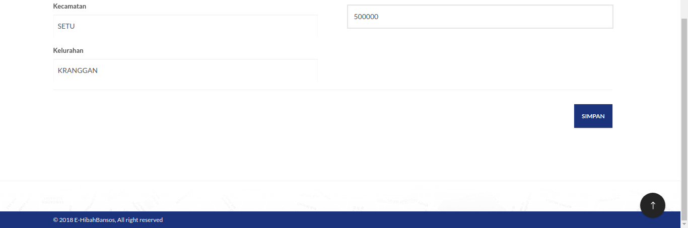
Tampilan Form Proposal ini dapat diakses dengan mengklik Create Proposal pada Menu Tampilan Proposal.
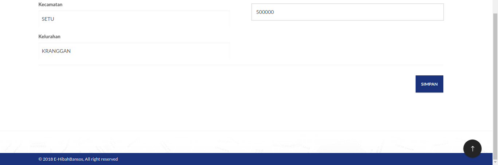
Tampilan Form Proposal ini dapat diakses dengan mengklik Create Proposal pada Menu Tampilan Proposal.
{kind=link}
1.3.2 Tampilan Form Edit Proposal

 Tampilan Form Proposal ini dapat diakses dengan mengklik Edit pada kolom action di tabel proposal pada Menu Tampilan Proposal.
Tampilan Form Proposal ini dapat diakses dengan mengklik Edit pada kolom action di tabel proposal pada Menu Tampilan Proposal.
1.4 Tampilan OPD
1.4.1 Tampilan OPD Frontend
Tampilan Frontend OPD sebagian besar sama seperti tampilan awal yang membedakan pada tampilan user ini adalah OPD dapat mendaftarkan proposal dan mengedit proposal.
1.4.1.1 Tampilan Form Proposal
 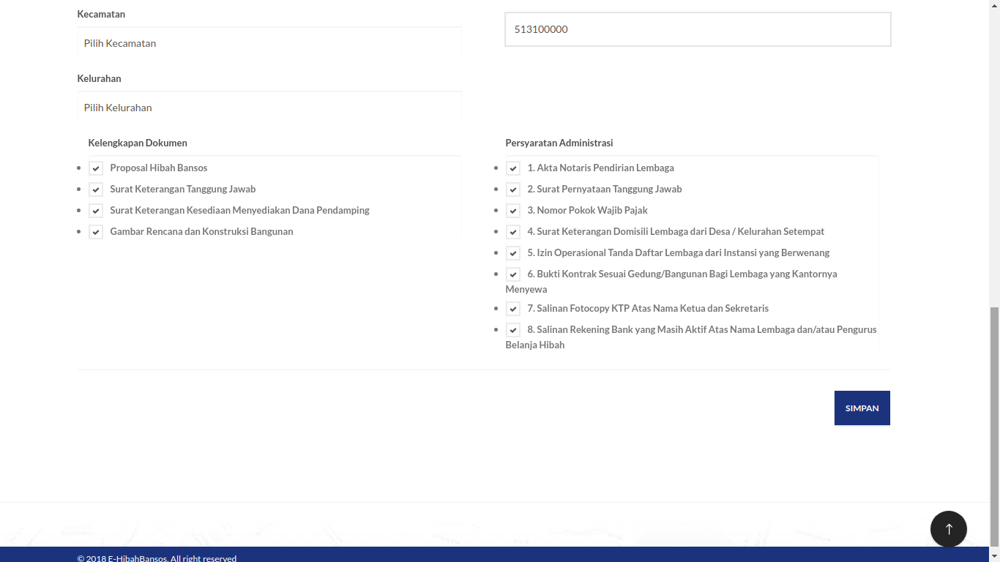
Tampilan Form Proposal ini dapat diakses dengan mengklik Create Proposal pada Menu Tampilan Proposal.
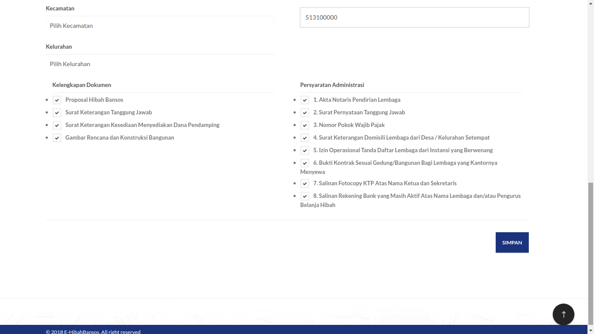
Tampilan Form Proposal ini dapat diakses dengan mengklik Create Proposal pada Menu Tampilan Proposal.
{kind=link}
1.4.1.2 Tampilan Form Edit Proposal
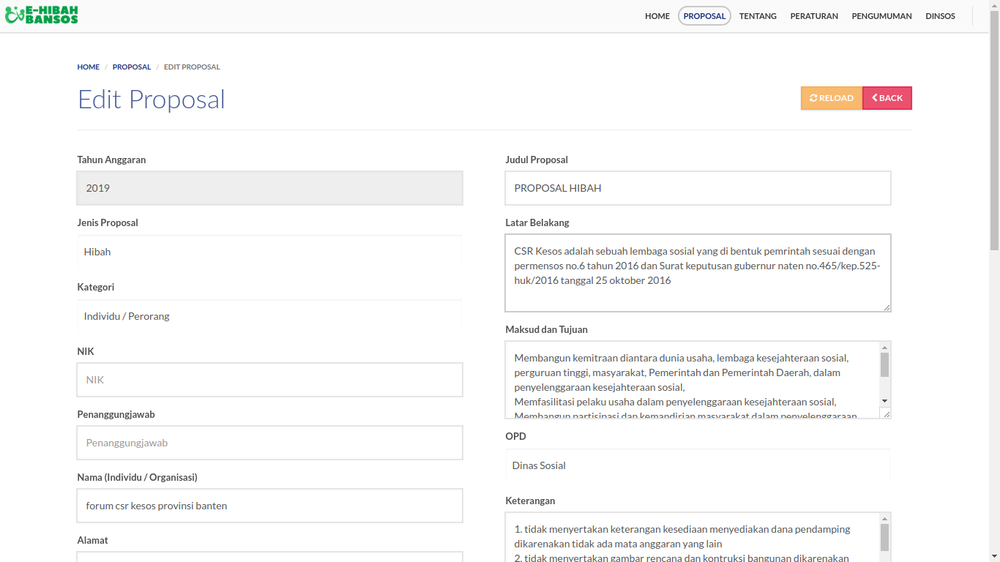
 Tampilan Form Proposal ini dapat diakses dengan mengklik Edit pada kolom action di tabel proposal pada Menu Tampilan Proposal.
Tampilan Form Proposal ini dapat diakses dengan mengklik Edit pada kolom action di tabel proposal pada Menu Tampilan Proposal.
{kind=link}
1.4.2 Tampilan OPD Backend
1.4.2.1 Tampilan Dashboard
 Tampilan Dashboard ini akan timbul ketika OPD sukses login, halaman dashboard ini merupakan halaman backend dari OPD.
Tampilan Dashboard ini akan timbul ketika OPD sukses login, halaman dashboard ini merupakan halaman backend dari OPD.
1.4.2.2 Tampilan Proposal
 Tampilan Proposal ini dapat diakses dengan mengklik Tulisan Proposal pada main menu backend OPD.
Tampilan Proposal ini dapat diakses dengan mengklik Tulisan Proposal pada main menu backend OPD.
1.4.2.2.1 Tampilan Add Proposal
 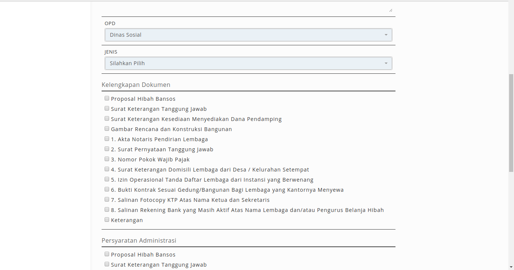
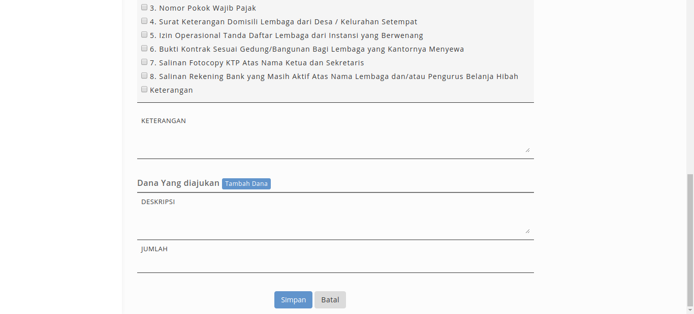
Tampilan Add Proposal ini dapat diakses dengan mengklik tombol + Add Proposal pada tampilan Proposal.
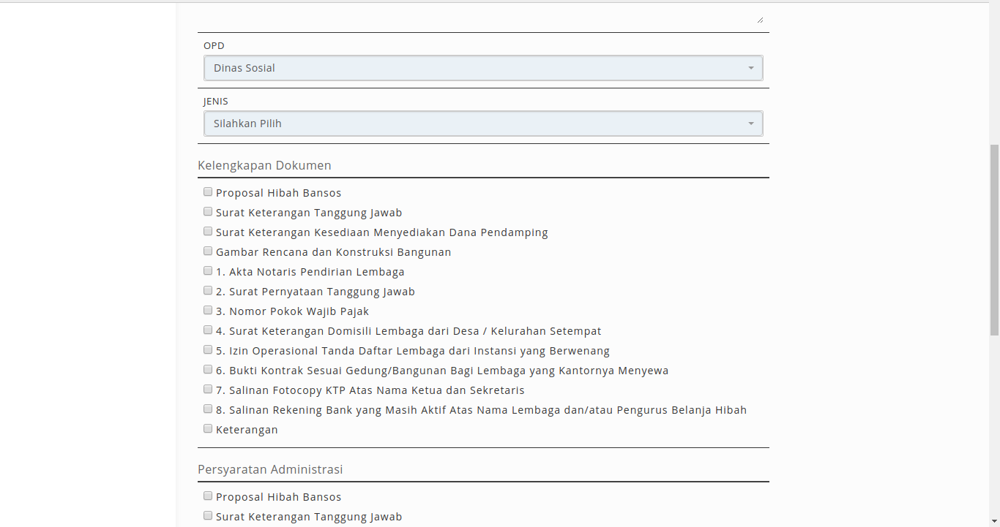
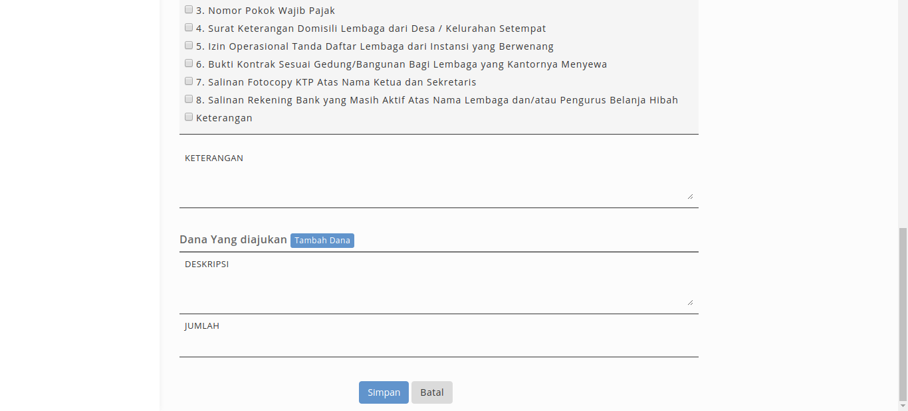
Tampilan Add Proposal ini dapat diakses dengan mengklik tombol + Add Proposal pada tampilan Proposal.
{kind=link}
{kind=link}
1.4.2.2.2 Tampilan Koreksi Proposal
 Tampilan Koreksi Proposal ini dapat diakses dengan mengklik tombol Koreksi pada main kolom action proposal.
Tampilan Koreksi Proposal ini dapat diakses dengan mengklik tombol Koreksi pada main kolom action proposal.
1.4.2.2.3 Tampilan Arsip Proposal
 Tampilan Arsip Proposal ini dapat diakses dengan mengklik tombol Arsip pada main kolom action proposal.
Tampilan Arsip Proposal ini dapat diakses dengan mengklik tombol Arsip pada main kolom action proposal.
2. Tampilan Android
1.1 Tampilan Umum
1.1.1 Tampilan Dashboard
 Pada saat membuka aplikasi android e-Hibahbansos maka user akan ditampilkan halaman Home aplikasi yang berisikan mengenai info-info mengenai aplikasi E-hibahbansos.
Pada saat membuka aplikasi android e-Hibahbansos maka user akan ditampilkan halaman Home aplikasi yang berisikan mengenai info-info mengenai aplikasi E-hibahbansos.
1.1.2 Tampilan Proposal
 Tampilan Proposal ini dapat diakses dengan mengklik icon proposal pada dashboard e-Hibahbansos.
Tampilan Proposal ini dapat diakses dengan mengklik icon proposal pada dashboard e-Hibahbansos.
1.1.2.1 Tampilan Detail Proposal
 Tampilan Detail Proposal ini dapat diakses dengan mengklik tombol Baca pada proposal.
Tampilan Detail Proposal ini dapat diakses dengan mengklik tombol Baca pada proposal.
1.1.3 Tampilan Pengumuman
 Tampilan Pengumuman ini dapat diakses dengan mengklik icon Pengumuman pada dashboard e-Hibahbansos.
Tampilan Pengumuman ini dapat diakses dengan mengklik icon Pengumuman pada dashboard e-Hibahbansos.
1.1.3.1 Tampilan Detail Pengumuman
 Tampilan Detail Pengumuman ini dapat diakses dengan mengklik tombol Baca pada pengumuman.
Tampilan Detail Pengumuman ini dapat diakses dengan mengklik tombol Baca pada pengumuman.
1.1.4 Tampilan Daftar
 Tampilan Registrasi ini dapat diakses dengan mengklik icon Registrasi pada dashboard e-Hibahbansos.
Tampilan Registrasi ini dapat diakses dengan mengklik icon Registrasi pada dashboard e-Hibahbansos.
1.1.5 Tampilan Log In
 Tampilan Log In ini dapat diakses dengan mengklik icon Log In pada dashboard e-Hibahbansos.
Tampilan Log In ini dapat diakses dengan mengklik icon Log In pada dashboard e-Hibahbansos.
1.2 Tampilan User
1.2.1 Tampilan Dashboard
 Pada saat berhasil log in pada aplikasi android e-Hibahbansos maka user akan ditampilkan halaman Home aplikasi yang berisikan mengenai info-info mengenai aplikasi E-hibahbansos.
Pada saat berhasil log in pada aplikasi android e-Hibahbansos maka user akan ditampilkan halaman Home aplikasi yang berisikan mengenai info-info mengenai aplikasi E-hibahbansos.